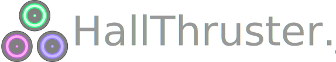

HallThruster.jl is an open-source, 1D fluid Hall thruster code written in Julia. It is developed by Thomas Marks, Paul Schedler and Declan Brick at the University of Michigan's Plasmadynamics and Electric Propulsion Laboratory and is licensed under the MIT license.
Installation
To install HallThruster.jl, you must first install Julia 1.10 or above from the official Julia site. We recommend using the latest Julia release when possible. Once installed, launch Julia and type ] to enter the Pkg REPL. To install HallThruster.jl type
(@v1.10) pkg> add HallThrusterThis will install HallThruster.jl using Julia's package manager.
Changes
v0.18.0 is is a breaking release, made as part of our effort to move toward v1.0.0 in the next few months. Users may need to update their code to avoid errors. Check out the list of changes and removals to see how to migrate your code.
A log of changes to the code from v0.18.0 onward can be found here.
Contribution
Users are welcome to suggest and implement features for the code, as well as report bugs or numerical issues they encounter. Please feel free to open an issue on this repository describing your desired change/bug-fix. Pull requests are also welcome!
Citation
If you use this code in your work, please cite our publication in the Journal of Open Source Software:
@article{Marks2023,
doi = {10.21105/joss.04672},
url = {https://doi.org/10.21105/joss.04672},
year = {2023},
publisher = {The Open Journal},
volume = {8}, number = {86}, pages = {4672},
author = {Thomas Marks and Paul Schedler and Benjamin Jorns},
title = {HallThruster.jl: a Julia package for 1D Hall thruster discharge simulation},
journal = {Journal of Open Source Software}
}